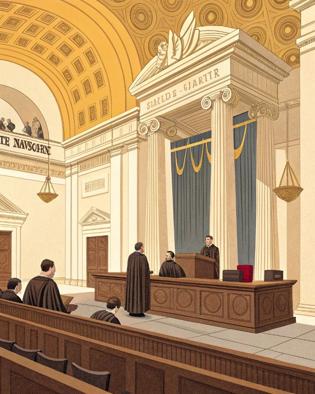

Bloque 01 · Fundamentos del Derecho
El Ordenamiento Jurídico Español regula el origen de las normas jurídicas a través de dos tipos de fuentes:

Dirige la política interior y exterior y ejecuta las leyes. Se identifica con el Gobierno.
Representado por las Cortes Generales (Congreso y Senado). Elabora y dicta las leyes.
Administra justicia a través de juzgados y tribunales, aplicando las normas vigentes.
Norma Suprema del ordenamiento jurídico. Obliga a ciudadanos y poderes públicos.
Jurisprudencia — Doctrina reiterada del Tribunal Supremo al aplicar la ley, la costumbre y los principios generales. Sirve para complementar el ordenamiento jurídico.
Tres criterios de aplicación de las normas:
Eficacia temporal: Entrada en vigor generalmente a los 20 días naturales de su publicación en el BOE. La derogación puede ser expresa o tácita.
Tratados constitutivos y sus modificaciones. Nivel superior en la jerarquía europea.
Reglamento alcance general y obligatorio. Directiva obliga al objetivo, requiere transposición nacional.
Materias contenidas en el art. 149 CE.
Materias contenidas en el art. 148 CE. Los Estatutos de Autonomía determinan las competencias de cada Comunidad.
Derecho civil propio de una CCAA que se aplica con preferencia al derecho común contenido en el Código Civil.
Se produce una internacionalización de las relaciones jurídicas personales y de los mercados:
Tratados y convenios internacionales en los que España sea parte. Una vez publicados oficialmente en España, forman parte del ordenamiento interno (art. 96 CE).
Tratados, reglamentos y directivas de la Unión Europea. El Reglamento tiene alcance general y obligatorio; la Directiva obliga al Estado a cumplir un objetivo en un plazo, requiriendo transposición nacional.
Conjunto de normas que regulan las interacciones en el entorno digital y el uso de las TIC. Se distingue entre datos personales (sujetos a protección) y no personales. Las plataformas digitales son prestadores de servicios de la sociedad de la información que facilitan el acceso o almacenamiento de datos (redes sociales, streaming).
Máquinas diseñadas para simular la inteligencia humana mediante algoritmos.
Red de objetos cotidianos con sensores que comparten datos de forma autónoma.
Tecnología de registro descentralizado y seguro de transacciones en «bloques» encadenados.
Tecnologías para gestionar y analizar conjuntos de datos masivos para identificar patrones.
Carta de Derechos Digitales — Documento de referencia (julio 2021) para proteger los derechos de los ciudadanos en el entorno virtual. Su objetivo no es elaborar un proyecto de norma jurídica sino redactar un documento que sirva de referencia para una futura ley orgánica.